GaussView 6：选择与原子编辑（p.150–193）¶
选择工具栏/快捷键、原子列表编辑器、原子群组、MO 相关、构象/Grid 搜索、PBC 搭建与文件类型
原文件：
../gview6官方说明书.md（全量单文件存档）｜图片目录：../imgs/
关于选择的方方面面：从原子到片段、残基、链及更多¶
Beyond（p.150）¶
GaussView 提供了多种多样的方法和技术，用于在分子结构中选择原子。选中的原子组在搭建结构和设置 Gaussian 任务中有多种用途。本节将讨论各种备选方案，总结如下：
-
选择相关工具栏图标：点击选择（Select by Clicking）、橡皮筋/框选（Select by Rubberband/Marquee）、画刷选择（Select by Brush）、全选（Select All）和取消全选（Select None）
-
视图窗口（view window）选择快捷键
-
使用原子列表编辑器（Atom List Editor）、PDB 残基编辑器（PDB Residue Editor）和 PDB 二级结构编辑器（PDB Secondary Structures Editor）进行选择
-
使用原子群组编辑器（Atom Group Editor）
-
原子选择编辑器（Atom Selection Editor）
选择相关工具栏图标（Selection-Related Toolbar Icons）¶
主窗口构建工具栏和独立的构建器调色板（Builder palette）都包含控制项目选择行为的图标，可将光标置于专用的选择模式。最左侧的图标将选择模式设为点击模式：在原子上单击可切换其选中状态。选中的原子显示为浅黄色（见本节开头插图右侧中最左侧的两个原子），并显示其序号。与之相对的是高亮显示（highlighting），此时原子显示为浅蓝色，便于识别和/或定位（例如右下角的氢原子）。如果一个原子同时被选中和高亮，则显示为浅蓝色（高亮）。
第二种选择模式是框选模式，也称为橡皮筋模式（本节开头的第二个图标）。在此模式下，按住鼠标按钮并拖动光标将在视图中画出一个矩形。释放鼠标按钮后，定义区域内的所有原子都将被加入选区。
最后一种选择模式是画刷模式。在此模式下，拖动鼠标将选中光标经过的所有原子。
所有模式的默认行为都可通过下文讨论的原子选择（Atom Selection）对话框进行调整。
另外两个选择相关图标是全选（Select All）和取消全选（Select None）按钮，分别用于选中和取消选中分子中的全部原子。
视图窗口中的选择快捷键（Selection Keystrokes in View Windows）¶
在任何视图窗口（View window）中，无论当前工具栏图标选择了何种模式，都可随时通过以下快捷键使用相同的选择功能（不区分大小写）：
| 按键（Key） | 效果（Effect） |
|---|---|
| a | 选中所有原子。 |
| n | 取消选中所有原子（即不选中任何原子）。 |
| r | 按住 R 键期间启用框选。 |
| c | 按住 C 键期间启用单个原子点击模式选择。 |
| b | 按住 B 键期间启用画刷选择模式。 |
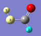
使用原子列表编辑器及类似工具进行选择（Selecting with the Atom List Editor and Similar Tools）¶
原子列表编辑器（Atom List Editor）提供了一种类似电子表格的机制，用于查看和修改分子结构与参数。PDB 残基编辑器（PDB Residue Editor）和 PDB 二级结构编辑器（PDB Secondary Structure Editor）也提供相同的功能。
原子列表编辑器（The Atom List Editor）
这些对话框中有三个主要的与选择相关的功能：
-
所有这些工具都能够高亮显示分子中的各个部分/子结构，通过高亮（Highlight）列控制。高亮的原子可通过原子列表编辑器中视图（View）菜单上的将高亮原子加入/移出常规选区（Add/Remove Highlighted Atoms to/from General-Selection）项，以及其他工具视图（View）菜单中类似的选择/取消选择高亮残基（Select/Deselect Highlighted Residues）和选择/取消选择高亮二级结构（Select/Deselect Highlighted Secondary Structures）项进行选中和取消选中。
-
这三个工具的行（Rows）菜单都包含常规选择选中行对应的原子（Generally-Select Atoms of Selected Rows）项。选择该项将把电子表格中选中行对应的所有原子加入当前选区。
-
行（Rows）菜单上的反选（Invert Selection）和全选（Select All）项分别用于将选区修改为包含所有未选中原子和包含所有原子。
原子群组编辑器（Atom Group Editor）的群组操作（Group Actions）菜单中也有选择功能：
原子群组编辑器（The Atom Group Editor）群组操作（Group Actions）菜单最后几项用于选中/取消选中当前原子群组中的原子（此处为片段 2）。
原子选择编辑器（The Atom Selection Editor）¶
原子选择编辑器（Atom Selection Editor）通过工具（Tools）=>原子选择（Atom Selection）菜单路径打开，提供选择功能和工具首选项。如下图所示（r、c、b 快捷键见上文快捷键表）：
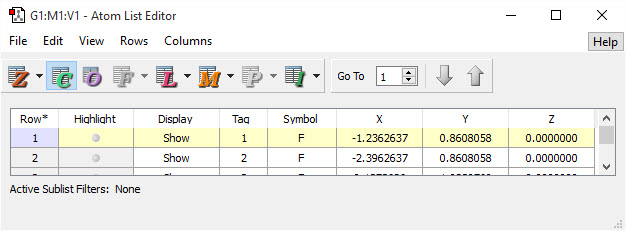
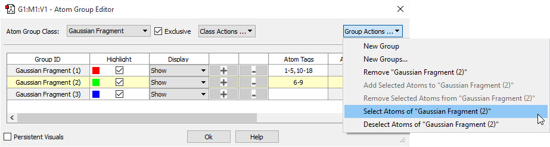
原子选择编辑器（The Atom Selection Editor）
该对话框允许您选中所有原子、不选中任何原子，以及按原子群组选中和取消选中。它还设置各种选择模式的默认行为。您还可以使用滑块将当前选区扩展到相邻原子，相邻的定义可按成键、距离或 PDB 残基，并设有最大值。详细信息见此处。
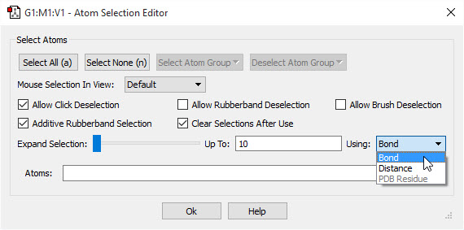
PDB 残基选择（PDB Residue Selection）¶
如果当前模型对应的 PDB 文件中包含残基信息，该对话框允许您按残基选择原子。
PDB 残基选择（PDB Residue Selection）在此示例中，我们正在选择所有的赖氨酸残基。
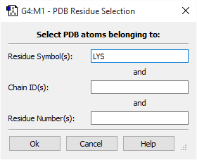
原子选择编辑器（The Atom Selection Editor）¶
原子选择编辑器（Atom Selection Editor）通过工具（Tools）=>原子选择（Atom Selection）菜单路径打开，用于指定选择功能和工具首选项。如下图所示：
原子选择编辑器（The Atom Selection Editor）在此示例中，我们正准备将选区扩展到与已选中原子成键的原子。
对话框顶部的按钮提供了选中所有原子、不选中任何原子或选中特定原子群组中原子的方法。后两个按钮实际为下拉菜单，其内容由当前结构的全部已定义原子群组组成（如上例中定义了两种不同的群组类别）。
对话框中部区域的复选框和弹出菜单指定两种选择模式的默认值，含义如下：
| 项目（Item） | 含义（Meaning） |
|---|---|
| 视图中鼠标选择（Mouse Selection in View） | 指定视图窗口（View window）中的默认选择模式： |
| 允许点击取消选择（Allow Click Deselection） | 未勾选时，再次单击已选中的原子无效果。 |
| 累加式橡皮筋 选择（Additive Rubberband Selection） |
未勾选时，每次框选将替换当前选区，而不是累加 到当前选区。 |
| 允许橡皮筋 取消选择（Allow Rubberband Deselection） |
勾选时，框选将切换所围区域内所有原子的选中 状态。 |
| 允许画刷取消选择（Allow Brush Deselection） | 勾选时，画刷选择操作将切换所触及原子的选中状态。 |
| 使用后清除选区（Clear Selections After Use） | 未勾选时，即使某操作已作用于组成原子，选区仍 保留。 |

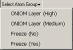
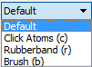
扩展选区（Expand Selection）滑块允许您将选区扩展到与已选中原子相邻的原子。使用（Using）弹出菜单指定如何识别“相邻”原子：按成键、按绝对距离（不论是否成键）、或按 PDB 残基。此处的选择会影响将滑块向右移动时哪些原子被加入选区，至多（Up To）字段表示滑块最右端对应的最大值：键数、以埃为单位的距离、或残基数。因此，当至多（Up To）为 5 并选择成键（Bond）时，将滑块移到最右端将选中与所有当前选中原子相隔 5 个键以内的全部原子。当选择 PDB 残基（PDB Residue）时，每步将选中整个 PDB 残基。
选中原子列表显示在最后的原子（Atoms）字段中，您也可以直接编辑该字段。
原子列表编辑器（The Atom List Editor）¶
选择工具（Tools）=>原子列表（Atom List）菜单项或单击原子列表（Atom List）按钮时，将显示原子列表编辑器（Atom List Editor）窗口。该工具以可编辑的电子表格格式显示活动视图窗口（View window）中分子的坐标和其他参数。该窗口的默认配置如下图所示。
原子列表编辑器（The Atom List Editor）
表格中显示哪些列由工具栏中的按钮控制。高亮显示的按钮对应的列可见。只有与当前分子结构相关的按钮处于活动状态。可以使用列（Columns）菜单上的项目显示/隐藏单个列。您还可以使用工具栏中的转到（Go To）控件直接跳转到特定原子（按编号）。
双击列标题可选中该列中的所有条目。可以使用行（Rows）=>排序所选（Sort Selected）子菜单按当前列对所有选中行排序。
该窗口的默认配置显示分子的 Z-矩阵和笛卡尔坐标。可以使用工具栏按钮选择显示不同的数据。
单击某个字母显示图标将显示或隐藏该组中的所有列。您还可以通过列（Columns）菜单或相关图标右侧小三角所附的子菜单选中或取消选中每个单独的列，以控制其显示：
| 图标（Icon） | 查看/指定（View/Specify） |
|---|---|
| — | Z-矩阵坐标 |
| — | 笛卡尔坐标 |
| — | 优化状态 |
| — | PBC 分数坐标 |
| — | ONIOM 层指定与参数 |
| — | 分子力学原子类型与电荷 |
| — | PDB 文件残基与链数据（只读） |
| — | 同位素质量 |
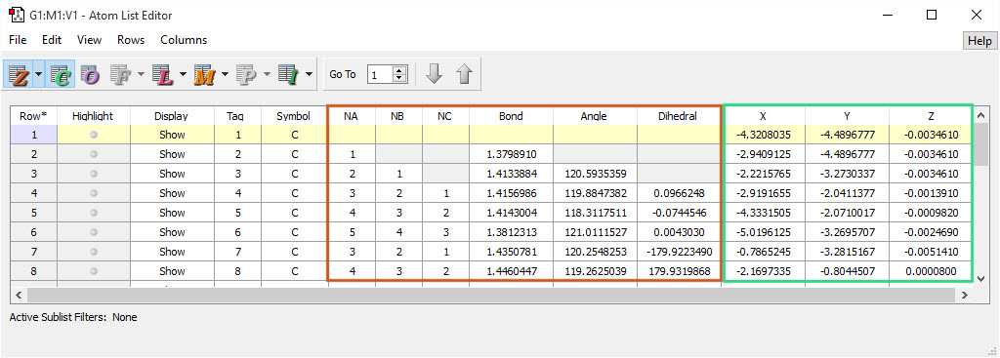
及其右侧的小三角。
下图展示了该窗口中每个图标可能控制的列。
更多原子列表编辑器列（Additional Atom List Editor Columns）
从上到下、从左到右，这些列分别由显示 ONIOM 列（Show ONIOM Columns）按钮、显示 MM 类型列（Show MM Type Columns）按钮、显示分数坐标列（Show Fractional Coordinates Columns）按钮、显示 PDB 列（Show PDB Columns）按钮、显示质量列（Show Mass Columns）按钮和显示优化标志列（Show Optimization Flag Columns）按钮控制。注意，带底纹的列为只读。
分子参数中的任何一项都可以在这个类似电子表格的窗口中编辑。可通过单击、最左侧列的行（Row）单元格上单击并拖动、或 Ctrl 加单击来选中表格中原子的参数（或数据）。在原子列表编辑器中双击任何命名列标题可选中所有原子；再次单击可取消全选。
滚动到窗口底部，在符号（Symbol）列中选择一个元素，然后单击添加（Add）按钮，可添加更多原子。这将在列表中插入一个填有默认值的新行。
原子高亮与显示（Atom Highlighting and Display）¶
一般来说，视图窗口（View window）中的原子可以被选中或取消选中。选中的原子显示为黄色（见下文）。在原子列表编辑器中，原子还可以被高亮显示，此时显示为浅蓝色。
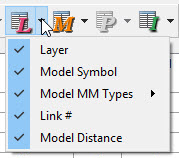
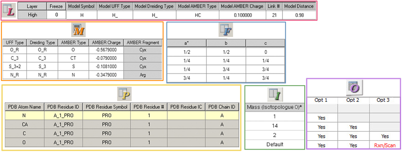
原子选择、高亮与隐藏（Atom Selection, Highlighting and Hiding）左侧视图中有 6 个选中的原子、2 个高亮的原子和 4 个隐藏的原子（一个与看似裸露的环碳相连的不可见甲基）。后两种属性在原子列表编辑器对应列中标示。
高亮（Highlight）列中的圆点控制分子视图窗口（View window）中对应原子的高亮显示。如果一个原子同时被选中和高亮，则显示为浅蓝色。
显示（Display）列中每个弹出菜单上的项目控制每个原子在视图窗口中是否可见，应用于单个原子时含义如下：
-
显示（Show）：显示该原子。
-
隐藏（Hide）：隐藏该原子。
-
隐藏其他（Hide Others）：隐藏除该原子外的所有原子。
-
显示其他（Show Others）：显示除该原子外的所有原子。
当原子列表中选中多行时，打开或关闭其中任一原子的高亮，或更改其显示（Display）菜单选择，都将影响选区中的所有对应原子。
定义同位素体（Defining Isotopologues）¶
I 按钮控制同位素体定义的显示。可以使用该按钮向表格中添加一个或多个同位素体列。可以使用振动（vibration）结果功能指定哪一列用于频率分析。同位素体 0 中指定的同位素将用于用该分子创建的输入文件。
如果选中表格的一行或多行，然后单击同位素体字段，将出现一个弹出菜单，其中包含该元素的有效同位素。例如，碳的菜单包含：12、13、14 和默认（Default）。从其中一个菜单做出选择后，您的选择将应用于所有选中行中相同元素的原子。无法通过一次操作将所有原子重置为默认值。
原子列表编辑器菜单（Atom List Editor Menus）¶
原子列表编辑器窗口中的各菜单项说明如下。文件（File）菜单包括与保存和打印表格数据相关的项目：
-
打印（Print）：打印原子列表。
-
导出数据（Export Data）：将数据保存为制表符分隔格式的文本文件。
-
关闭（Close）：关闭原子列表编辑器对话框。
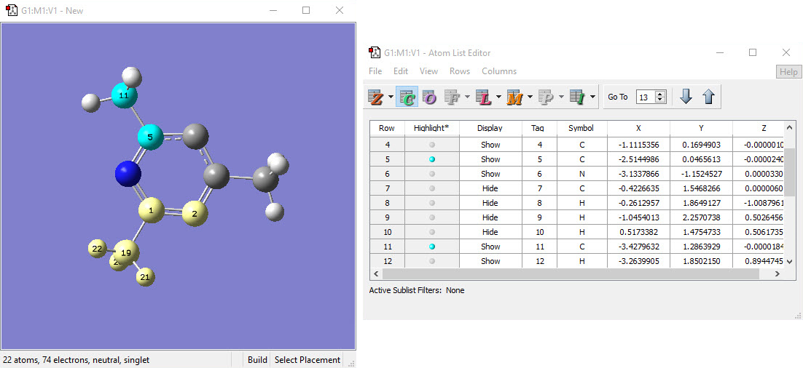
编辑（Edit）菜单项允许您修改分子说明的内容：
-
撤销（Undo）：撤销上一步操作。
-
重做（Redo）：恢复上一次被“撤销”的操作。
-
复制数据（Copy Data）：将当前行的数据复制到剪贴板。
-
删除（Delete）：按所选子菜单项删除原子：所选原子（Selected Atoms，所有选中的原子）、所选氢原子（Selected Hydrogen Atoms，所有被选中的氢）、所选冗余原子（Selected Redundant Atoms，选区内的重复行）、所有原子（All Atoms，删除所有原子）、所有氢原子（All Hydrogen Atoms，删除所有氢原子）、所有冗余原子（All Redundant Atoms，删除分子说明中的所有重复行）。
-
重排（Reorder）：按子菜单中所选项修改表格的原子标号（标签）：
-
所选原子按成键（Selected Atoms by Bonding）：对所选原子排序，使成键原子连续。
-
所选原子按行（Selected Atoms by Rows）：按原子编号（即标签（Tag）列）对所选原子排序。
-
所选原子氢在后（Selected Atoms: Hydrogens Last）：对所选原子，将氢原子排在各自成键组最后。
-
全部原子（首原子除外）按成键（All Atoms (Except the First) by Bonding）：对原子排序，使成键原子连续。
-
全部原子按行（All Atoms by Row）：按原子编号（即标签（Tag）列）对整个表格排序。
-
全部原子氢在后（All Atoms: Hydrogens Last）：将所有氢原子排在各自成键组最后。
-
全部原子按 PDB 残基（All Atoms by PDB Residue）：按 PDB 文件中指定的残基指定对整个表格排序。
-
Z-矩阵（Z-Matrix）：包含用于处理 Z-矩阵分子说明的项目：
-
标准化（Standardize）：将 Z-矩阵修改为符合典型用法的形式。
-
按成键重连所选原子（Reconnect Selected Atoms by Bonding）：通过分析成键为所选原子重新生成 Z-矩阵条目。
-
重连二面角近无效的所选原子（Reconnect Selected Atoms with a Nearly Invalid Dihedral）：通过分析成键为二面角近乎无效的所选原子重新生成 Z-矩阵条目（Gaussian 任务中很少需要）。
-
按成键重连全部原子（Reconnect All Atoms by Bonding）：通过分析成键为所有原子重新生成 Z-矩阵条目。
-
优化标志（Optimization Flags）：为后续优化冻结/解冻原子。下面的“是（Yes）”和“否（No）”指该项目是否应被优化。
-
所选原子全部坐标优化（“是”）（Opt All Coords ("Yes") of Selected Atoms）：根据需要解冻所选原子。
-
所选原子冻结全部坐标（“否”）（Freeze All Coords ("No") of Selected Atoms）：冻结所选原子。
-
全部原子全部坐标优化（“是”）（Opt All Coords ("Yes") of All Atoms）：根据需要解冻所有原子。
-
全部原子冻结全部坐标（“否”）（Freeze All Coords ("No") of All Atoms）：冻结所有原子。
-
PBC=>删除胞外全部原子（PBC=>Delete All Atoms Outside Cell）：删除不在单胞内的原子。
-
PBC=>将全部原子平移入胞内（PBC=>Translate All Atoms Inside Cell）：将单胞边界外的全部原子平移到胞内等效位置，然后删除冗余原子。
-
为全部原子加氢（Add Hydrogens for All Atoms）：向结构中添加氢原子（通常用于 PDB 文件）。
-
更新 MM 类型与电荷（Update MM Types and Charges）：为分子重新生成分子力学原子类型。操作范围由子菜单选择指定：所选原子（Selected Atoms）或全部原子（All Atoms）。
- MM 电荷（MM Charges）：打开 MM 电荷（MM Charges）对话框，如下所示，允许您为原子指定用于分子力学方法的电荷（通常作为 ONIOM 任务中低精度层的一部分）。操作（Action）菜单上的清除（Clear）选项将删除指定原子的已指定电荷。
用原子列表编辑器指定 MM 电荷（Assigning MM Charges with the Atom List Editor）
该对话框用于自动为原子指定用于分子力学计算的电荷。目标（Target）菜单指定应对哪些原子指定电荷：全部原子、全部所选原子、或当前缺少 MM 电荷的全部原子。操作（Action）菜单指定使用哪种电荷方案。Amber94 电荷始终可用。列表中的其他选项在已为该结构完成相应 Gaussian 计算后可用。
视图（View）菜单控制使用原子列表编辑器时视图窗口中的原子高亮。第一部分的每一项都是开关，菜单中其旁边的对勾表示已启用：
-
独占高亮（Exclusive Highlighting）：表格中只允许一行高亮（即视图窗口（View Window）中一个原子）。
-
Z-矩阵连接高亮（Z-Matrix Connectivity Highlighting）：对每个高亮原子，同时高亮用于定义其 Z-矩阵条目的其他原子（即键、角和二面角说明）。
-
ONIOM 连接高亮（ONIOM Link Highlighting）：根据该行 ONIOM 层数据内容，显示以被高亮原子作为 ONIOM 计算连接原子（link atom）的原子。
视图（View）菜单其余项目效果如下：
-
在视图中居中高亮原子（Center Highlighted Atoms in View）：在活动视图窗口中重新放置结构，使高亮原子显示在中心。
-
将高亮原子加入/移出常规选区（Add/Remove Highlighted Atoms to/from General Selection）：将高亮原子加入当前选区/从当前选区移除。
-
检查拥挤原子（Check for Crowded Atoms）：对距离过近（0.75 埃以内）的不合物理的原子打开高亮。
行（Rows）菜单控制分子中的部分或全部原子在表格中是否可见，并提供选中原子组的一些快捷方式：
-
子列表过滤器（Sublist Filters）：打开子列表过滤器（Sublist Filters）对话框，用于定义原子过滤表达式（见此处说明）。子列表过滤器用于限制显示，使该工具对非常大的分子仍可管理。
-
排序所选（Sort Selected）：按子菜单中选择的活动列和标准对高亮的原子列表行排序：升序（Ascending by...）或降序（Descending by...）。工具栏中的上下箭头按钮与这些子菜单项等效。
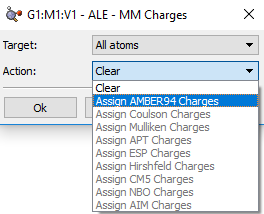
-
子列表（Sublist）：按所选子菜单项（显示子列表原子（Show Sublist Atoms）或显示非子列表原子（Show Non-Sublist Atoms））切换活动子列表内和/或外原子的显示。当前选择在子菜单对应项旁以对勾标示。
-
全选（Select All）：无条件选中所有原子。
-
反选（Invert Selection）：取消选中所有当前选中原子，并选中所有未选中原子。
-
选择常规选中原子的行与常规选择选中行的原子（Select Rows of Generally-Selected Atoms and Generally-Select Atoms of Selected Rows）：使视图中选中的（黄色）原子与表格中选中的行趋于一致。前者优先考虑视图窗口（View Window）中当前选中的原子，在已选中行之外再选中表格中对应的行；后者使视图选区服从表格中选中的行。
列（Columns）菜单允许您逐列指定表格中显示哪些列。菜单开头几项对应表格中的默认列，与各种列显示按钮无关。您可以通过相应子菜单选择 Z-矩阵坐标与连接、笛卡尔坐标、优化标志、同位素质量、分数坐标、ONIOM 数据、MM 类型和 PDB 数据按钮各自显示哪些列。笛卡尔坐标（Cartesian Coordinates）项与相应按钮功能相同——但单个坐标不能单独选择。
使用子列表过滤器（Using Sublist Filters）¶
子列表过滤器是将在原子列表编辑器中可见行限制为可管理数量的方法，适用于大分子。通过原子列表编辑器的行（Rows）=>子列表过滤器（Sublist Filters）菜单路径打开的对话框定义，如下图所示。
创建子列表过滤器（Creating Sublist Filters）
该对话框允许您创建和应用子列表过滤器，用于限制原子列表编辑器中显示的行。在本例中，我们依次应用两个过滤器：过滤器 1 选择高层 ONIOM 层中的原子，过滤器 2 在该子集中选择氧和氮原子。
要使用该功能，必须先用新建过滤器（New Filter）按钮创建过滤器。过滤器始终命名为过滤器 n，无法重命名。使用标准（Criteria）列表中的项目定义过滤器；弹出菜单显示可用的标准类别。在图中，我们使用 ONIOM 类别定义过滤器 1。从列表中选择一个或多个标准，然后用 > 按钮将其移到所选过滤器。虽然本例未这样做，但同一过滤器中可以组合来自不同标准（Criteria）类别的项目。
按钮同样将列表中的全部项目移过去。可以用 < 和 << 从过滤器中删除项目，分别删除所选项目和全部项目。用删除过滤器（Remove Filter）按钮删除整个过滤器。
过滤器内的标准按或（OR）逻辑组合：匹配任一标准的原子都将被显示（或按原子列表编辑器行（Rows）=>子列表（Sublist）子菜单的设置不显示）。通过选中/取消选中名称左侧的复选框激活和停用过滤器。当只有一个过滤器活动时，所有匹配该过滤器的原子都受影响。当多个过滤器活动时，所有活动过滤器按对话框中所列顺序依次串行应用，按与（AND）逻辑。例如，过滤器 2 仅应用于应用过滤器 1 后剩余的匹配原子。后续过滤器绝不会扩大前一过滤器的结果，而只会进一步过滤。
可用的标准（Criteria）类别有：
-
选择一个或多个原子标签号（序列号）。
-
标签列表（Tag List）：选择原子标签列表。
-
元素（Elements）：按元素类型选择原子。
-
ONIOM：按 ONIOM 层、层边界和/或连接原子（link atom）情况选择原子。
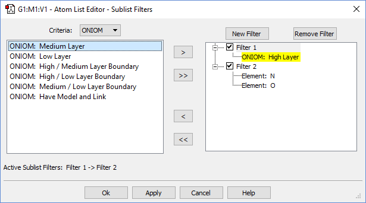
- 选择分子力学原子类型和/或 MM 电荷未定义的原子。
过滤器针对单个分子组，关闭并重新打开相应输入文件、或退出并重启 GaussView 后，当前过滤器将丢失，即在相应输入文件的不同会话间不保留。换句话说，如果您关闭并重新打开输入文件，或退出并重启 GaussView，当前过滤器将丢失。
PDB 残基编辑器与 PDB 二级结构编辑器（The PDB Residue Editor and The PDB Secondary Structure Editor）¶
使用 PDB 残基编辑器（PDB Residue Editor）和 PDB 二级结构编辑器（PDB Secondary Structure Editor）可更方便地检查和修改从 PDB 文件导入的结构，通过工具（Tools）菜单上相应命名的项目打开。如下图所示。
PDB 残基与 PDB 二级结构编辑器（The PDB Residue and PDB Secondary Structure Editors）PDB 残基编辑器（上）和 PDB 二级结构编辑器（下）
主要提供对 PDB 文件中指定的残基及其他数据的只读视图。
PDB 残基编辑器（上）和 PDB 二级结构编辑器主要提供对 PDB 文件中指定的残基及其他数据的只读视图。显示（Display）列可用于隐藏某些残基/二级结构中的原子，以便更容易查看分子的关键特征。高亮（Highlight）列可用于高亮所选项对应的原子。在本例中，我们高亮了 A 链中的残基 12，使其在下方的视图窗口（View window）中易于定位。在二级结构编辑器中，选择一条链也会选中其螺旋——但反之则不行。
这些编辑器中的菜单与上一节讨论的原子列表编辑器中的菜单非常相似，简述如下：
文件（File）菜单包括与保存和打印表格数据相关的项目：
-
打印（Print）：打印原子列表。
-
导出数据（Export Data）：将数据保存为制表符分隔格式的文本文件。
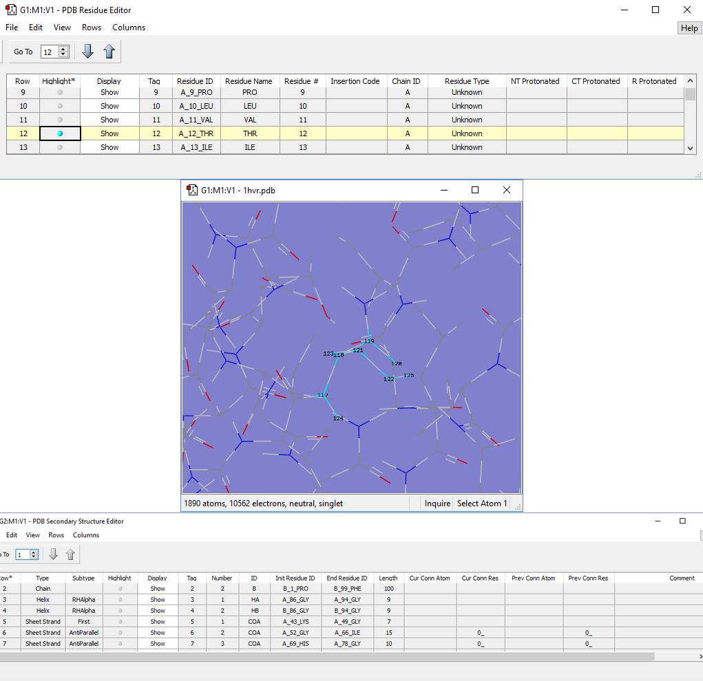
- 关闭（Close）：关闭原子列表编辑器对话框。
编辑（Edit）：包含允许您修改分子说明内容的菜单项：
-
撤销（Undo）：撤销上一步操作。
-
重做（Redo）：恢复上一次被“撤销”的操作。
-
复制数据（Copy Data）：将当前行的数据复制到剪贴板。
-
删除（Delete）：按所选子菜单项删除原子：所选原子（Selected Atoms，所有选中的原子）、所选氢原子（Selected Hydrogen Atoms，所有被选中的氢）、所选冗余原子（Selected Redundant Atoms，选区内的重复行）、所有原子（All Atoms，删除所有原子）、所有氢原子（All Hydrogen Atoms，删除所有氢原子）、所有冗余原子（All Redundant Atoms，删除分子说明中的所有重复行）。
-
加氢（Add Hydrogens）：在需要处向残基添加氢原子。
视图（View）：原子可能难以区分，因为它们已被高亮而显示为蓝色。使用此菜单对原子高亮的控制可缓解该问题。第一部分的每一项都是开关，菜单中其旁边的对勾表示已启用：
-
独占高亮（Exclusive Highlighting）：表格中只允许一行高亮（即视图窗口（View Window）中一个原子）。
-
在视图中居中高亮残基（Center Highlighted Residues in View）：在活动视图窗口中重新放置结构，使高亮残基显示在中心。
-
选择高亮残基的原子（Select Atoms of Highlighted Residues）：选中当前高亮残基中的全部原子，该操作累加到当前选区。
-
取消选择高亮残基的原子（Deselect Atoms of Highlighted Residues）：取消选中高亮残基中的全部原子。
行（Rows）：控制分子中的部分或全部原子在表格中是否可见，并提供选中原子组的一些快捷方式：
-
排序所选（Sort Selected）：按子菜单中选择的活动列和标准对高亮的原子列表行排序：升序（Ascending）或降序（Descending）。工具栏中的上下箭头按钮与这些子菜单项等效。
-
全选（Select All）：无条件选中所有原子。
-
反选（Invert Selection）：取消选中所有当前选中原子，并选中所有未选中原子。
-
选择常规选中原子的行与常规选择选中行的原子（Select Rows of Generally-Selected Atoms and Generally-Select Atoms of Selected Rows）：使视图中选中的（黄色）原子与表格中选中的行趋于一致。前者优先考虑视图窗口（View window）中当前选中的原子，在已选中行之外再选中表格中对应的行；后者使视图选区服从表格中选中的行。
列（Columns）：允许您通过勾选或取消勾选各自的复选框，逐列指定表格中显示哪些列。
使用原子群组编辑器（Using the Atom Group Editor）¶
原子群组编辑器（Atom Group Editor）通过主工具（Tools）菜单上的原子群组（Atoms Groups）项打开，允许您在结构中定义原子子组，用于各种目的。如下图所示。
原子群组编辑器（The Atom Group Editor）
该对话框用于为各类 Gaussian 任务定义片段和其他原子群组。可为每个片段指定单独的电荷和自旋（如此处所做）。原子群组类别（Atom Group Class）弹出菜单列出 GaussView 特别处理的各类原子群组（见下文）。
注意，该对话框仅用于将原子指定到命名群组，此处的任何项目都不会影响结构，也不会从分子中删除任何原子。
电子表格中各列保存以下数据：
-
群组 ID（Group ID）保存每个原子群组的名称，通常为类别名加编号。
-
勾选高亮（Highlight）列中的复选框时，相应群组中的原子将被所示高亮颜色圈出。
-
显示（Display）列中的菜单允许您隐藏属于一个或多个群组的原子。
-
原子标签（Atom Tags）字段列出每个群组中原子的序列号。您可以直接在此输入原子编号来定义群组，当通过其他方法向群组添加或移除原子时，该字段也会更新。
-
原子数（Atom Count）列出群组中的原子数，电子数（Electrons）列出电子数（均为只读）。
-
电荷（Charge）、自旋多重度（Spin Mult）和未成对自旋（Unpaired Spins）列可用于设置每个片段的电荷和自旋多重度（后文有示例说明）。
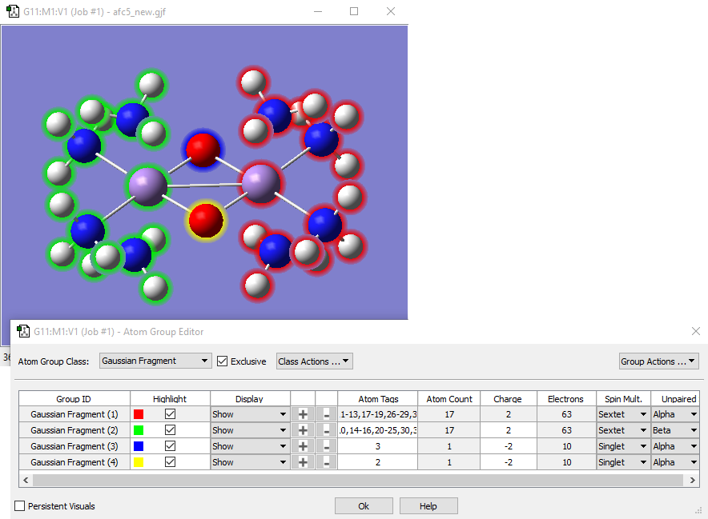
- 每行中的加号和减号按钮可用于将所有当前选中原子加入或移出相应群组。
定义原子群组后，群组操作（Group Actions）菜单上的选择原子（Select Atoms）和取消选择原子（Deselect Atoms）项可用于选中/取消选中原子群组中的原子。该菜单上其他项目的用途如下：
-
新建群组（New Group）：添加当前群组类别的另一个群组。例如，在上图中选择该项将添加另一个 Gaussian 片段群组。
-
删除“项目”（Remove "item"）：删除所选原子群组，该群组中的任何原子将被指定到第一个群组。
-
将所选原子加入/移出（Add Selected Atoms to/Remove Selected Atoms from）：与所选原子（Selected Atoms）列中的加号和减号按钮等效。
该对话框中还有两个重要控件：
-
独占（Exclusive）复选框使每个原子恰好属于一个原子群组。勾选时，若将一个原子放入某原子群组，它将自动从当前群组移除。各类 Gaussian 计算类型所用的原子群组类型都要求勾选。对 Gaussian 片段（Gaussian Fragment）类别，默认关闭，但一旦启用则保持。
-
持久可视化（Persistent Visuals）复选框控制关闭原子群组编辑器后，视图窗口（View window）中是否保留高亮和显示/隐藏设置。默认未勾选。
原子群组类型（Types of Atom Groups）¶
已定义的原子群组类别如下：
-
Gaussian 片段（Gaussian Fragment）：为分子说明、片段猜测等定义原子片段。Gaussian 计算设置（Gaussian Calculation Setup）用途：猜测（Guess）面板：使用片段（原子群组）生成猜测
-
ONIOM 层（ONIOM Layer）：为 ONIOM 计算定义使用不同模型化学的区域。Gaussian 计算设置用途：方法（Method）面板：多层 ONIOM 模型（Multilayer ONIOM Model）
-
冻结（Freeze）：为几何优化指定冻结原子。Gaussian 计算设置用途：向分子说明添加冻结状态列。
-
NMR 自旋-自旋（NMR Spin-Spin）：为 NMR 任务期间的自旋-自旋耦合计算指定原子。Gaussian 计算设置用途：NMR 的任务类型（Job Type）面板：计算自旋-自旋耦合（compute spin-spin couplings）
-
选择简正模式（Select Normal Modes）：为频率计算中选择简正模式指定原子。Gaussian 计算设置用途：频率（Frequency）或优化+频率（Opt+Freq）的任务类型（Job Type）面板：选择简正模式（Select Normal Modes）
类别操作（Class Actions）菜单允许您创建新型原子群组、将原子群组指定重置为默认（全部在第一组）、删除原子群组类别以及重命名类别。
指定 ONIOM 层（Specifying ONIOM Layers）¶
选择工具（Tools）=>选择层（Select Layer）菜单项或单击选择层（Select Layer）按钮将打开层选择工具（Layer Selection Tool）。该窗口用于以图形方式将原子指定到 ONIOM 层。如下图所示。
将原子指定到 ONIOM 层（Assigning Atoms to ONIOM Layers）
有几种选择原子以指定层的方法：
-
可以使用对话框顶部的按钮之一。全选（Select All）按钮选中分子中的全部原子，取消全选（Select None）按钮取消选中全部原子。选择层（Select Layer）按钮选中当前指定到指定层的所有原子。选择 PDB 残基（Select PDB Residues）打开另一个选择对话框，如果当前模型对应的 PDB 文件中包含该信息，可按残基选择原子。
-
用鼠标左键手动选中或取消选中原子，直到选好所有需要的原子。按住 Shift 键可累加到当前选区。
-
基于邻近的选择：选择一个原子，然后使用扩展选区（Expand Selection）滑块，直到选中所有需要的原子。向右移动会增大选择原子时使用的距离。
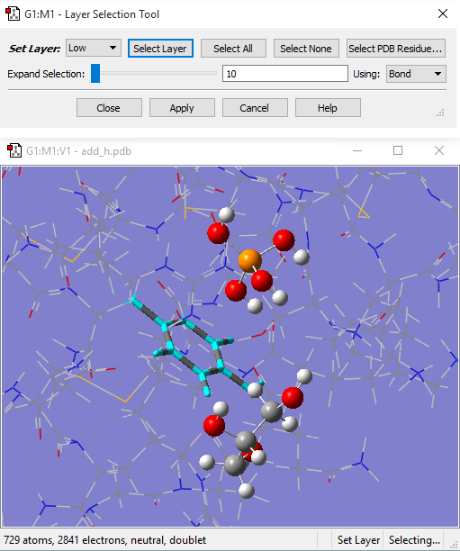
该对话框允许您为 ONIOM 计算将原子指定到各层，不同层用不同的显示格式表示。在这里，左侧环上的原子已被选中以指定层。
对于基于距离的原子选择，待选原子之间的距离取决于使用（Using）弹出菜单中所选标准：
-
成键（Bond）：仅选择彼此成键的原子。
-
距离（Distance）：仅按与当前选区的邻近程度选择原子，不论是否成键。
施加对称性（Imposing Symmetry）¶
点群对称性（Point Group Symmetry）对话框用于为分子结构指定所需的对称性，通过工具（Tools）=>点群（Point Group）菜单路径打开。
对分子结构施加对称性（Imposing Symmetry on a Molecular Structure）
对话框上部区域控件含义如下：
-
启用点群对称性（Enable point group symmetry）：启用 GaussView 的对称性功能。
-
约束到子群（Constrain to subgroup）：选择要约束结构到的点群。
-
用于（For）：选择全部（All）将对未来的结构更改施加对称性；无（None）禁用对称性约束。
近似高阶点群（Approximate higher-order point groups）区域显示并允许您对当前分子结构应用更高对称性的子群，包含以下控件：
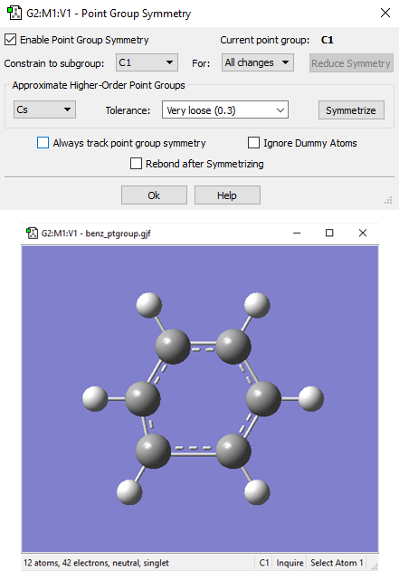
-
左侧弹出菜单列出对称性高于当前结构的可适用点群（如有）。单击对称化（Symmetrize）前先选择所需的点群。
-
容差（Tolerance）菜单：视结构参数相等的截止水平。截止越大，越容易识别出更高对称性的群。因此，增大容差可能使左侧弹出菜单中出现更多点群。
-
对称化（Symmetrize）按钮：立即对分子结构施加所选高阶点群。
始终跟踪点群对称性（Always track point group symmetry）：告诉 GaussView 随几何结构变化连续计算点群指定。将该项与对称性约束设置无（None）结合使用，以便在调整结构参数时（例如使用键长滑块）连续查看点群变化。通常仅在更改完成后才识别点群。对非常大的分子，在较慢的系统上启用该项可能导致响应时间明显延迟。
在前面的示例中，GaussView 已识别该扭曲苯分子的当前点群为 C1，同时也识别出 C2v 点群可能适用。单击对称化（Symmetrize）按钮将对结构应用指定的点群。容差（Tolerance）字段可用于收紧或放宽对称性识别过程。在本例中，放宽容差使 GaussView 将最高可适用点群识别为 D6h。
对称化（Symmetrize）按钮（工具栏上）和编辑（Edit）=>对称化（Symmetrize）菜单项都使用该分子最近在点群对称性（Point Group Symmetry）对话框中的容差（Tolerance）设置（或默认值普通（Normal））立即对当前结构施加可识别的最高点群。它们还有一个副作用：为该分子启用点群对称性（同样使用以前的设置，如有）。
视图窗口（View window）状态栏将标示分子的已识别对称性和约束对称性：
对称性相关状态栏显示（Symmetry-Related Status Bar Displays）
三嗪分子状态栏对称性信息部分的四种视图：（a）未打开对称性；（b）分子对称性（D3h）但无对称性约束（C1）；（c）分子对称性（D3h）且结构约束到 D3 对称性；（d）分子对称性和约束对称性均为 D3h。

冗余坐标编辑器（The Redundant Coordinate Editor）¶
冗余坐标编辑器（Redundant Coordinate Editor）允许您为 Gaussian 优化或势能面扫描创建和编辑冗余坐标，通过工具（Tools）=>冗余坐标（Redundant Coordinates）菜单路径或冗余坐标编辑器（Redundant Coordinate Editor）按钮访问。如下图所示。
该对话框的核心是一个可滚动列表，包含每个坐标的信息。状态列中的铅笔图标表示该坐标为当前活动坐标。状态列中的警告标志表示该坐标不完整或无效。当当前活动坐标无效或不完整时，底部的状态栏说明警告的性质。坐标（coordinate）列包含坐标及其参数的简要说明。
冗余坐标编辑器（The Redundant Coordinate Editor）我们正在为两个选中的原子添加键坐标，以便在优化输出中报告其距离（即使这两个原子实际上并未成键）。窗口中的列表还显示了我们添加的其他 2 个坐标。
顶部的工具栏提供按钮，用于添加新坐标、删除坐标，以及在列表中上移或下移项目。添加新坐标将创建一个未识别的坐标，放在当前活动坐标之后，并成为活动坐标。
坐标（Coordinate）区域中两个弹出菜单的各种选择支持所有可用的冗余内坐标类型，这些菜单上的项目都是自明的。选择特定坐标类型所需的任何附加字段将在选中类型时出现在面板中。更多信息见《Gaussian User's Reference》中 Opt=ModRedundant 的讨论。
退出冗余坐标编辑器时，若仍有无效或不完整的坐标，您将收到通知，并可选择继续编辑。如果仍退出，任何无效坐标将被删除。
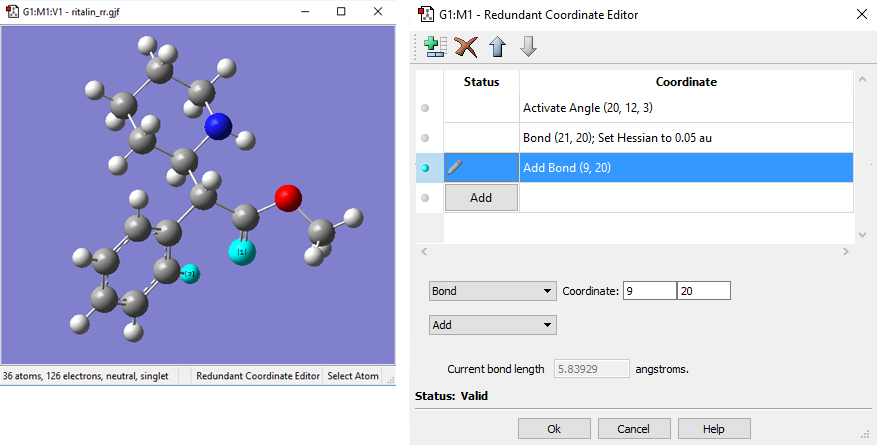
连接编辑器（The Connection Editor）¶
连接编辑器（Connection Editor）通过工具（Tools）=>连接（Connection）菜单路径打开，可用于确定在整个分子组中是否保持了正确的原子顺序。您还可以用它自动重排原子，使相关结构之间的原子标签在分子组内对齐（有助于为 QST2 和 QST3 过渡结构优化准备结构）。也可以手动重排原子。
连接编辑器活动时，将分析分子，确定原子标签在整个分子组中是否匹配，状态栏将报告结果。若检测到可能可修复的不匹配，对话框将报告并建议启用自动修复（Enable Autofixing）。单击相应按钮将告诉连接编辑器重排原子标号以消除这些不匹配。自动修复的成功或失败将在状态栏报告。自动修复活动时，任何手动重排原子标签的操作都会调用自动修复，并消除可能引入的任何不匹配。
如果您试图设置 QST2 或 QST3 优化而相应选项为灰色，必须使用连接编辑器。通过使用连接编辑器，问题将得到解决，您将能够设置所需的优化计算。
活动时，可用改名为禁用自动修复（Disable Autofixing）的按钮禁用自动修复。当自动修复不适用时，该按钮改名为无自动修复（No Autofixing）。
连接编辑器（The Connection Editor）
连接编辑器用于验证和指定两个分子结构中的原子对应关系。在分子组中以多几何模式查看可更方便地比较和编辑。在这个特意构造的示例中，需要交换其中一个模型中原子 4、5、6 的顺序，原子才能正确对应。这可以通过单击启用自动修复（Enable Autofixing）按钮或手动过程完成。
也可以用鼠标手动重排原子，这些操作以参考原子为基准（见第一条）：
-
左键单击：将该原子指定为参考原子，也可用参考原子（Reference Atom）控件完成。
-
中键单击：将标签比参考原子大一的编号指定给所选原子。
-
右键单击：与该原子和参考原子交换标签，该原子随后成为新的参考原子。
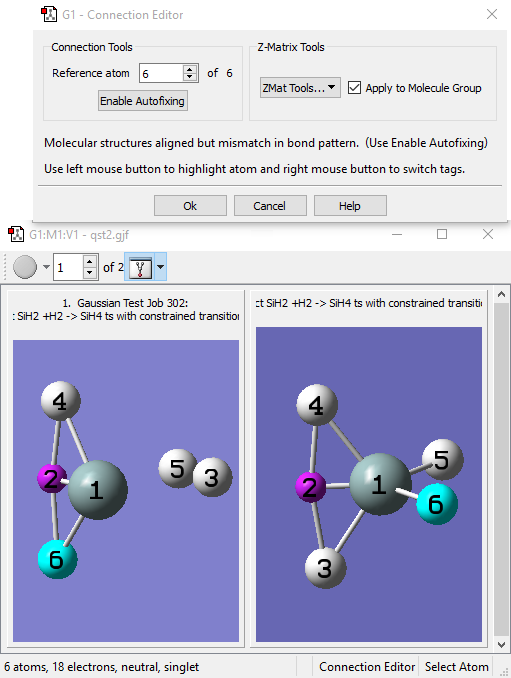
应用于分子组（Apply to Molecule Group）复选框决定连接编辑器的操作仅应用于当前模型还是分子组内的所有模型。
ZMat 工具（ZMat Tools）弹出菜单允许您对分子或分子组执行一些 Z-矩阵操作：
-
标准化（Standardize）：以标准形式重建 Z-矩阵。
-
氢后排（Sort H）：将氢原子移到原子顺序末尾。
-
重排（Reorder）：重新应用标准 Z-矩阵顺序。
-
重连（Reconnect）：重新生成连接数据。
-
全部优化（Opt All）：优化所有原子。
-
全不优化（Opt None）：不优化任何原子，即冻结所有原子。
该弹出菜单上可能出现的任何其他项目不适用于 Gaussian。
分子轨道（MO）编辑器（The Molecular Orbital (MO) Editor）¶
工具（Tools）=>分子轨道（MOs）菜单路径和 MO 编辑器（MO Editor）按钮都会打开 MOs 窗口。用于检查 Gaussian 计算的分子轨道（MOs）——MO 能量与占据数图、可视化的 MO 等值面（isovalue surface）——以及快速生成新的 MOs 和/或直观选择将用于 CASSCF 计算的活性空间 MOs。
MO 编辑器（The MO Editor）该窗口用于直观检查分子轨道，并可能为后续 Gaussian 计算重排其占据和/或顺序。在这里我们正在查看 MO 20，它是 5 个可用表面之一（和 2 个已选 MOs 之一）。
MOs 对话框有自己的嵌入式视图窗口（View window），用于显示与当前所选 MO 对应的分子和表面（若有）。该嵌入式视图为只读，不能用于编辑分子。在查看功能上，它与标准视图窗口（View window）几乎相同，包括平移、旋转和缩放分子的键盘与鼠标控制、访问上下文菜单等（本章早前关于操作视图的讨论及“查看 Gaussian 结果”中关于表面（surface）的讨论详见相关内容）。
可通过调整整个 MOs 对话框大小来改变当前表面（Current Surface）窗口的大小；也可通过单击并拖动其与 MO 图之间的分隔来调整其宽度，以调整两个窗口的相对宽度。
用鼠标左键单击 MOs 可选中，用于可视化、纳入未来计算和其他操作。选中的 MOs 以黄色高亮。如果某 MO 有可用表面，其右侧会出现一个小方块，当前正在查看表面的 MO 的方块为红色。单击另一 MO 的灰色方块将把当前表面（Current Surface）区域切换为显示该 MO 的表面。
窗口底部包含四个面板：
-
新 MOs（New MOs）面板用于读入或生成分子轨道。
-
可视化（Visualize）面板允许您为所需的 MOs 生成表面（surface）。
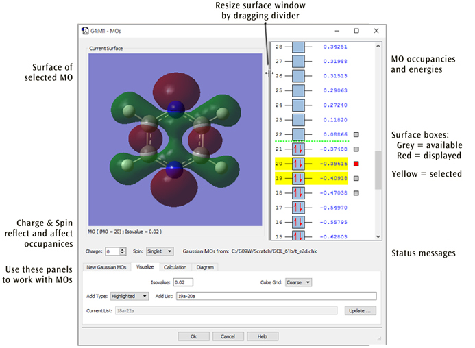
-
计算（Calculation）面板允许您为未来的 Gaussian 任务修改 MOs 的顺序。
-
图（Diagram）面板控制视图区域右侧的能级与轨道占据显示。
上图中可见的是可视化（Visualize）面板，其中各字段指定应可视化哪些轨道，以及两个表面（surface）生成参数（分别通过等值（Isovalue）和 Cube 网格（Cube Grid）字段指定等密度值和网格密度）。添加类型（Add Type）弹出菜单包含指定可视化哪些 MOs 的项目；其选项一般都是自明的，可能例外的是当前列表（Current List，重新生成当前列表（Current List）字段中列出的轨道）和其他（Other，指定可编辑的添加列表（Add List）字段中的任意轨道列表）。注意 GaussView 会尽量保持添加列表（Add List）和添加类型（Add Type）字段同步。单击更新（Update）按钮将生成所请求的轨道表面。
下图显示了 MO 编辑器中的其他面板（上下堆叠），每个面板将在本节余下部分讨论。
MO 编辑器的新建、计算和图面板（The MO Editor's New, Calculation, and Diagram Panels）
每个面板显示其典型用途（不一定是默认设置）。
修改轨道占据、分子电荷与自旋多重度（Modifying Orbital Occupancies, Molecular Charge, and Spin Multiplicity）¶
当前表面（Current Surface）右侧是当前分子的 MO 能量与占据图（若有），初始按能量递增排列。Alpha 和 Beta 电子分别用蓝色框中的红色上箭头和下箭头表示。可通过在相应框之间拖动电子，将电子从一个 MO 移到另一个 MO；也可在 MO 框中右键单击，从 MO 添加或删除电子。以此方式操作 MO 占据会相应改变分子的净电荷和/或自旋多重度，反映在
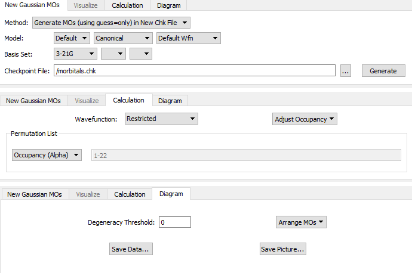
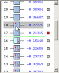
电荷（Charge）和自旋（Spin）字段中。这些字段也可直接编辑，任何更改都将反映在 MO 占据中。增大电荷将从 MOs 中删除电子，从 HOMO 开始；减小电荷将向 MOs 添加电子，从 LUMO 开始（若 HOMO 为单占据，则从 HOMO 开始）。类似地，增大自旋多重度将把电子从最高双占据 MOs 移到最低空 MOs，减小自旋多重度将把电子从最低能量单占据 MOs 移到最高能量单占据 MOs。最后，若电荷改变量为奇数，修改电荷也会影响自旋多重度。
计算（Calculation）面板中的控件也有此用途。调整占据（Adjust Occupancies）弹出菜单包含两个选项：
-
按能量填充（Aufbau）：按当前电荷（Charge）、自旋（Spin）和波函数（Wavefunction）设置，按轨道能量递增顺序用电子填充 MOs。
-
原始（Original）：恢复原始读入或计算的轨道占据，并相应修改电荷（Charge）、自旋（Spin）和/或波函数（Wavefunction）。
控制轨道显示（Controlling the Orbitals Display）¶
图（Diagram）面板控制轨道图。排列 MOs（Arrange MOs）弹出菜单允许您按能量（Energy）、占据（Occupancy）或 CI 排序轨道；后者适用于创建 CAS 活性空间（见下文）。简并阈值（Degeneracy Threshold）设置视为能量相等的阈值，示例如下。
MO 编辑器中的简并轨道（Degenerate Orbitals in the MO Editor）该 NH3 的 MO 显示说明简并轨道在轨道显示区中的外观。注意我们已将简并阈值（Degeneracy Threshold）从默认值 0 修改，使 GaussView 能检测出简并 MOs。
生成与获取 MOs（Generating and Retrieving MOs）¶
新建 Gaussian MOs（New Gaussian MOs）面板允许您读入或生成 MO 数据，取决于方法（Method）弹出菜单的设置。当设为载入已有检查点文件（Load Existing Chk File）时，可通过指定其位置然后单击载入（Load），从检查点（checkpoint）文件读入轨道数据。
当方法（Method）设为在新检查点文件中生成 MOs（使用 guess=only）（Generate MOs (using guess=only) in New Chk File）时，模型（Model）和基组（Basis Set）区域指定生成轨道的计算模型。标为模型（Model）的字段指定初始猜测类型、定域化方法和波函数类型，所需基组在下面这些字段中指定。该面板第二行的字段指定 Gaussian 计算所用的基组。关于各字段和选项的更多信息，请参阅《Gaussian User's Reference》中 Guess 关键词的讨论。
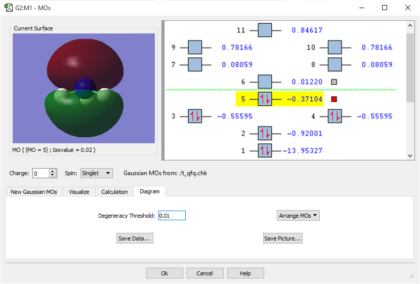
更多信息见相关内容。单击生成（Generate）将启动 Gaussian 任务以生成轨道数据（计算类型为 Guess=Only）。
重排轨道顺序（Rearranging Orbital Ordering）¶
计算（Calculation）面板中的置换列表（Permutation List）控件随时显示当前的轨道重排；初始为空。该区域的弹出菜单提供三种轨道重排选项：
-
占据（Alpha）（Occupancy (Alpha)）：按当前 alpha 轨道占据重排轨道，将填充轨道排在未填充轨道之下，全占据轨道排在部分占据轨道之下，每组内按能量递增排列。
-
占据（Beta）（Occupancy (Beta)）：按当前 beta 轨道占据重排轨道（如上一项）。仅适用于非限制波函数。
-
CI：重排轨道，使所有占据轨道和所有未占据轨道各自连续，每组内按能量递增排列。该选项适用于 CAS 计算。
杂项选项（Miscellaneous Options）¶
图（Diagram）面板还包含两个控件：
-
保存数据（Save Data）：将 MO 图中的分子轨道信息保存为简单的文本文件：每个轨道的轨道编号、占据数、轨道能量，以及冻结轨道数。对非限制波函数，alpha 和 beta 信息将保存在单独的块中。
-
保存图片（Save Picture）：保存 MO 图的图形图像，将提示您输入文件名和所需的图形格式。
GMMX 构象计算（GMMX Conformer Calculation）¶
GMMX 构象计算（GMMX Conformer Calculation）对话框用于设置和运行 GMMX 计算，可指定希望如何设置计算。如下图所示。
GMMX 构象计算窗口（The GMMX Conformer Calculation Window）
力场（Force Field）下拉菜单允许您选择构象计算（Conformer Calculation）所用的力场类型。默认力场为 MMFF94，一种通用有机力场，主要针对小的类药物有机分子设计。另外两种力场 MMX 和 MM3 来自 Allinger 课题组，与 MMFF94 的区别在于对扩展共轭的处理。
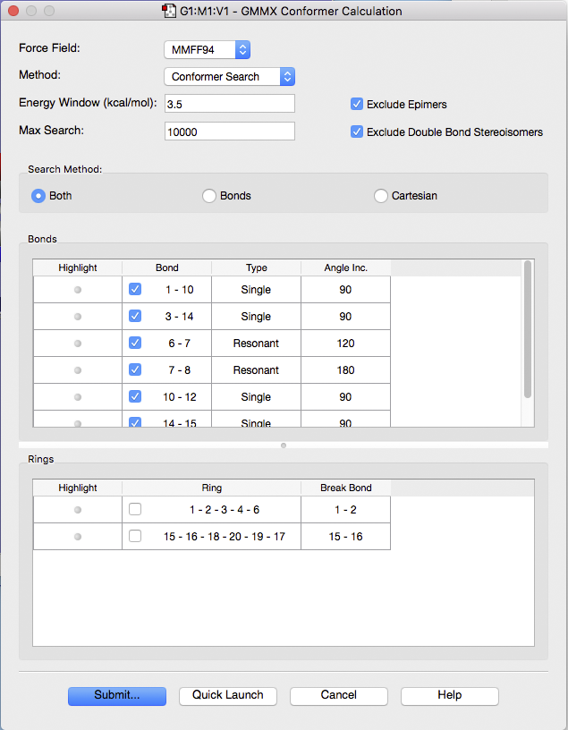
方法（Method）下拉菜单指定运行何种计算：
-
构象搜索（Conformer Search）：按对话框中指定的参数进行构象搜索。
-
优化（Optimization）：用分子力学优化当前结构。
-
网格搜索（Grid Search）：在扭转空间中进行系统构象搜索。所选可旋转键都设为初始构象，然后按指定的键角步进旋转 360 度。在每一步，最小化当前结构。
能量窗口（Energy Window）字段指定结果与最低能量构象体之间能量差的容差水平（kcal/mol）。运行计算时，超出该范围的构象体将被丢弃。
最大搜索（Max Search）字段指定将最小化的最大结构数。
勾选时，排除差向异构体（Exclude Epimers）复选框表示从结果集中删除当前结构的所有差向异构体。差向异构体是仅在一个立体中心构型不同的立体异构体。
勾选时，排除双键立体异构体（Exclude Double Bond Stereoisomers）复选框将从结果集中删除绕双键旋转产生的立体异构体，键（Bonds）列表中选中的双键除外。后者的旋转始终考虑，不受该设置影响。
构象搜索（Conformer Search）¶
搜索方法（Search Method）选项允许您选择希望 GaussView 如何搜索构象，可从键（Bonds）、笛卡尔（Cartesians）或两者同时（Both）中选择：
-
在笛卡尔搜索中，每个重原子在 X、Y 和 Z 三个维度上各移动某个随机距离，是在局域极小附近探索构象空间的好方法。
-
在键（Bonds）方法中，每个选中的可旋转键旋转某个随机量，通常会使分子构象发生大变化，是在局域极小之间跳跃的好方法。
-
对环系，键（Bonds）方法使用 Still 的 Ringmaker 策略，即断开环中的一个键，绕其余键旋转，然后尝试重新闭环。若重闭环的键长或键角不合理，则拒绝该构象并重新尝试。该方法对 8 元及以上柔性环效果良好。对柔性有限的环（如稠环或含双键的环）效果不佳，不应纳入环搜索，这些体系只做笛卡尔搜索即可。
窗口底部的两个列表指定搜索构象体所用的键和环。上面列表有三列：高亮（Highlight）、键（Bond）和角度（Angle）。单击高亮（Highlight）列中的灰点将在视图窗口中高亮该键。键（Bond）列出每个已识别键的原子编号，复选框控制计算期间是否使用该键，角度（Angle）列显示绕该键旋转的增量（度）。
下面列表包含分子结构含环时使用的参数，即环角和要断开的键，复选框同样控制构象搜索期间该项是否活动。
单击高亮（Highlight）列中的图标时，GaussView 将选中原子并在视图窗口中高亮，为您选择的键提供直观指示，示例如下。
网格搜索（Grid Search）¶
网格搜索（Grid Search）指定绕指定键旋转时的旋转角度。例如 120° 值表示使用 0°、120° 和 240° 的旋转角度。因此，值越小，网格搜索期间检查的结构越多。网格搜索（Grid Search）对话框如下图所示：
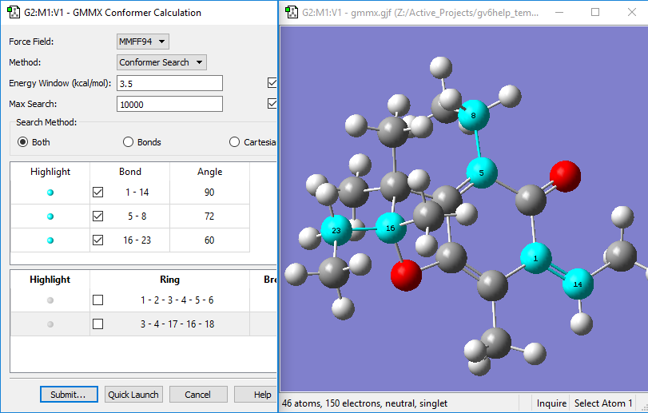
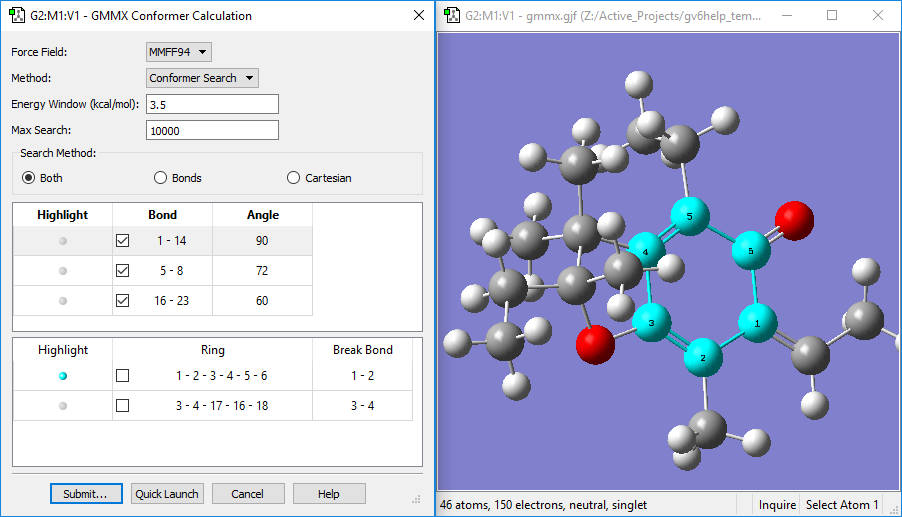
GMMX 构象计算窗口（The GMMX Conformer Calculation Window）网格搜索（Grid Search）方法 键（Bond）列出每个已识别键的原子编号。
能量窗口（Energy Window）字段指定结果与最低能量构象体之间能量差的容差水平（kcal/mol）。运行计算时，超出该范围的构象体将被丢弃。
结构数（Number of Structures）显示分子中存在多少个结构。
对话框中的其他项目与构象搜索（Conformer Search）模式中的功能和含义相同。
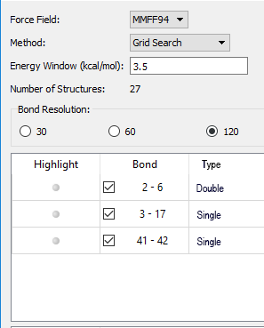
用晶体编辑器搭建周期体系（Building Periodic Systems with the Crystal Editor）¶
工具（Tools）=>PBC 菜单路径和晶体编辑器（Crystal Editor）按钮都会打开 PBC 窗口。该工具用于为周期体系指定单胞。要使用该功能以及在 Gaussian 中进行周期边界条件（Periodic Boundary Conditions）计算，需要对周期体系、空间群和一般相关术语有一定了解，本节假定具备该背景。
窗口底部有四个按钮：
-
确定（Ok），确认选择并退出窗口。
-
这是什么？（What's this?），说明您单击的下一个菜单选项的功能。
-
撤销（Undo），将设置恢复为最近一次选择之前的状态。
-
重做（Redo），恢复被撤销的选择。
窗口包含五个面板：
-
对称性（Symmetry）：指定单胞的维度、晶系和空间群约束。
-
单胞（Cell）：指定单胞尺寸，并包含重定位和约化胞内物质的控件。
-
视图（View）：指定视图窗口（View window）中每个方向显示多少个单胞，以及控制各种项目的显示/不显示。
-
内容（Contents）：包含胞内原子列表，为嵌入式迷你原子列表编辑器，其弹出菜单还允许您修改成键。
-
约化（Reduce）：允许您降低单胞的维度（例如从 3D 体系降为表面（surface））。
从最高层看，搭建周期体系的典型过程可能如下：
1：用对称性（Symmetry）面板指定维数和所需空间群。
2：用鼠标或通过内容（Contents）面板向胞内添加原子。
3：删除不需要的原子（例如，若用了片段作为生成所需原子的捷径）。
4：用单胞（Cell）面板设置单胞大小。
5：酌情用内容（Contents）面板调整成键。
6：酌情约化胞内物质。
7：根据需要用视图（View）面板指定显示属性。
PBC 搭建教程（PBC Building Tutorials）¶
更详细的说明请参阅 PBC 教程：
-
从乙烯搭建反式聚乙炔聚合物（Build a Trans-Polyacetylene Polymer From Ethylene）
-
从苯搭建石墨片（Build a Graphite Sheet From Benzene）
-
从甲烷搭建金刚石晶体的原胞（Build a Primitive Unit Cell of Diamond Crystal From Methane）
-
用空间群对称性搭建金刚石晶体的面心立方单胞（Build a Face-Centered Cubic Unit Cell for Diamond Crystal Using Space Group Symmetry）
-
将金刚石晶体原胞转换为面心立方单胞（Transform a Primitive Unit Cell of Diamond Crystal to a Face-Centered Cubic Unit Cell）
-
将金刚石晶体的面心单胞转换为原胞（Transform a Face-Centered Unit Cell of Diamond Crystal to a Primitive Unit Cell）
打开文件：基本对话框格式（Opening Files: Basic Dialog Format）¶
打开文件对话框（The Open File Dialog）
上图为基本打开文件（Basic Open File）对话框。该对话框格式与本地操作系统的对话框类似，但经过修改，包含一些 GaussView 特有功能。
目录列表（Directory List）¶
左侧列表框显示最近和常用访问的目录。右键单击其中一个目录将给出将其从列表中删除的选项，如下所示。
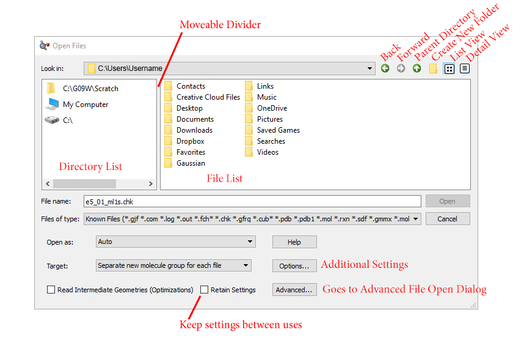
单击左侧列表中的目录将在右侧列表框中显示其内容，您可以用与操作系统对话框相同的方法在其中导航文件夹。
这两个列表框之间的分隔条可通过单击并拖动来移动，以改变它们的大小。
支持的文件类型（Supported File Types）¶
文件类型（Files of type）弹出菜单也用于限制文件列表中包含的文件种类。支持的文件类型有：
-
已知文件（Known Files，.gjf、.com、.log、.out、.fch、.chk、.gfrq、.cub、.dat、.adat、.aout、.arc、.aarc、.pdb、.pdb1、.mol、.rxn、.sdf、.gmmx、.mol2、.ml2、.cif）
-
Gaussian 文件（Gaussian Files，.gjf、.com、.log、.out、.fch、.chk、.gfrq）
-
Gaussian 输入文件（Gaussian Input Files，.com 或 .gjf）
-
Gaussian 输出文件（Gaussian Output Files，.log 或 .out）
-
Gaussian 格式化检查点文件（Gaussian Formatted Checkpoint Files，.fch 或 .fchk）
-
Gaussian 检查点文件（Gaussian Checkpoint Files，.chk）
-
Gaussian 频率文件（Gaussian Frequency Files，.gfrq）
-
Cube 文件（Cube Files，.cub 或 .cube）
-
Brookhaven PDB 文件（Brookhaven PDB Files，.pdb 或 .pdb1）
-
MDL Mol 文件（MDL Mol Files，.mol、.rxn 或 .sdf）
-
MDL SDF 文件（MDL SDF Files，.sdf）
-
GMMX 文件（GMMX Files，.gmmx）
-
Sybyl Mol2 文件（Sybyl Mol2 Files，.mol2 或 .ml2）
-
CIF 文件（CIF Files，.cif）
若需要，也可选择全部文件（All Files）项显示所有文件。
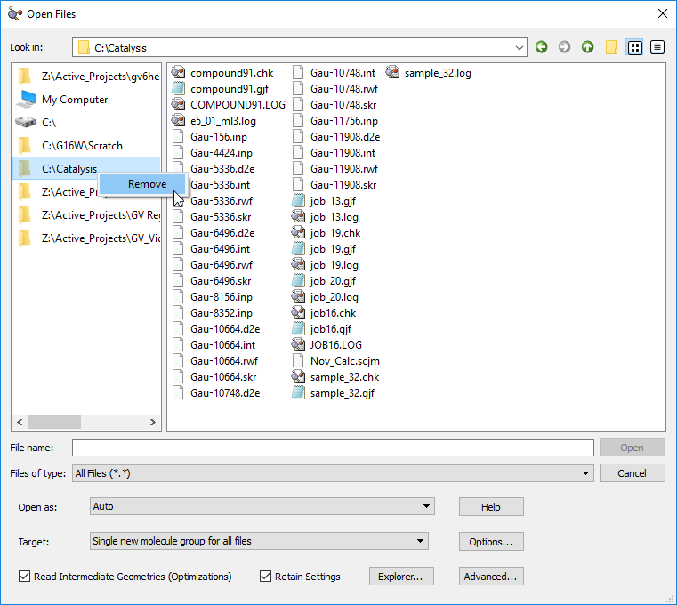
打开为（Open as）弹出菜单用于强制将输入文件解释为指定的文件类型，而不论实际文件扩展名。所有支持的文件类型都可作为选项，默认为自动（Auto），即仅按扩展名识别文件类型。
目标（Target）弹出菜单指定读入结构应放置的位置：
-
每个文件单独新建分子组（Separate new molecule group for each file）：为每个读入的文件创建一个新的单成员分子组，这是默认选项。
-
所有文件共用一个新建分子组（Single new molecule group for all files）：创建一个新的分子组，每个文件作为其中的一个分子。打开单个文件时，这与第一项等效。
-
追加全部文件到活动分子（Append all files to active molecule）：将所有打开文件的结构放入当前分子（当前分子组中），结果将添加额外的片段。
-
添加全部文件到活动分子组（Add all files to active molecule group）：将每个文件作为当前分子组中单独的新分子添加，当前分子保持不变。
-
所有文件添加为单个新分子（Add single new molecule for all files）：将所有文件的结构加入单个单成员分子组（类似第三项，但创建新分子）。
一般只输入文件中存在的第一个结构，因此只获取 Gaussian 输入文件中第一个任务步的结构。但勾选时，读取中间几何结构（优化）（Read Intermediate Geometries (Optimizations)）复选框使 GaussView 获取某些 Gaussian 结果文件中存在的所有几何结构，作为指定目标内的单独模型。该复选框适用于几何优化、IRC 任务、ADMP 和 BOMD 轨迹计算、势能面扫描的结果文件：所有含优化成分的任务。与追加全部文件到活动分子（Append all files to active molecule）选项不能同时使用。
选项（Options）按钮通向打开选项（Open Options）对话框。
高级（Advanced）按钮通向高级打开文件（Advanced Open File）对话框。
文件列表上下文菜单（File List Context Menu）¶
下图展示了在文件列表区域右键单击可用的上下文菜单：
打开文件：右键对话框（Opening Files: Right-Click Dialog）
上下文菜单包含以下项目：
-
重命名（Rename）：允许用户重命名文件。
-
删除（Delete）：允许用户删除文件或一组选中的文件。
-
显示隐藏文件（Show Hidden Files）：显示隐藏文件。
-
新建文件夹（New Folder）：在当前目录中创建新的子文件夹。
-
自动刷新目录视图（Auto-Refresh Directory Views）：在适当时自动刷新目录视图。
-
刷新目录视图（Refresh Directory View）：刷新当前目录的视图。
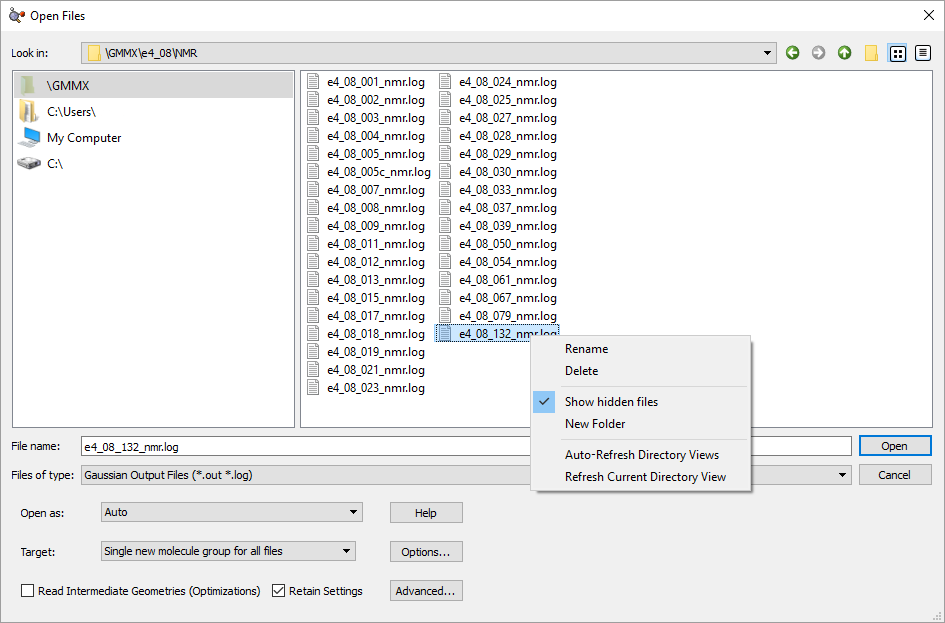
文件打开选项（File Open Options）¶
单击基本打开文件（Basic Open Files）对话框中的选项（Options）按钮将显示如下对话框。高级打开文件（Advanced Open Files）对话框中也有相同的面板，名为文件打开选项（File Open Options）。
该对话框（面板）包含修改文件打开/结构读取/处理默认行为的项目。单击右下角的默认设置（Default Settings）按钮可将该对话框恢复为默认设置。
文件打开选项（File Opening Options）
Gaussian 日志与检查点文件（Gaussian Log and Checkpoint Files）部分有两个选项：
-
读取中间几何结构（优化）（Read Intermediate Geometries (Optimizations)）：勾选时，将载入优化（Optimization）计算中的全部几何结构，而不仅是最终结构。
-
读取中间几何结构（扫描/IRC）（Read Intermediate Geometries (Scans/IRCs)）：勾选时，将载入扫描（Scan）或 IRC 计算中的全部几何结构，而不仅是最终结构。
Gaussian 检查点文件（Gaussian Checkpoint Files）区域中的保存格式化检查点文件（Save Formatted Checkpoint File）菜单控制格式化检查点文件的保存：
-
否（No）：选中时，不保存格式化检查点文件。
-
是，使用相同基文件名（Yes, use same base file name）：选中时，以与打开的文件相同的基名保存格式化检查点文件。
-
是，提示输入文件名（Yes, prompt for file name）：选中时，格式化检查点文件就绪可保存时会打开一个窗口，允许用户输入名称。
Gaussian 检查点文件（Gaussian Checkpoint Files）区域中的使用键表（Use Bond Table）菜单控制从检查点文件获取结构时如何指定成键。检查点文件包含列出结构内成键的键表。成键可按此表指定，或按核间距与标准原子共价半径计算。默认 GaussView 对优化和松弛扫描创建的检查点文件，用键表为所有获取的几何结构指定成键；对 IRC 或分子动力学计算创建的检查点文件，仅对第一个几何结构用键表指定成键；对其他所有类型计算创建的检查点文件，仅对最终几何结构用键表指定成键。该行为对应此菜单上的自动（Auto）选项。使用键表（Use Bond Table）菜单上的其他项目有：
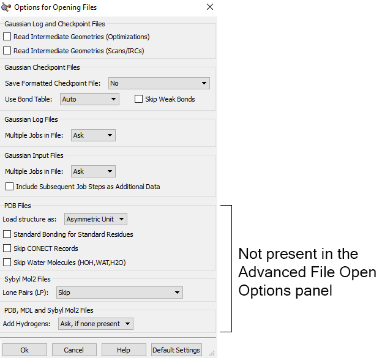
分子动力学计算，此行为对应此菜单上的自动（Auto）选项。使用键表（Use Bond Table）菜单上的其他项目有：
-
首个几何结构（First Geometry）：仅对首个几何结构用键表指定成键，其他获取结构的成键通过计算得出。
-
末个几何结构（Last Geometry）：仅对末个几何结构用键表指定成键，其他获取结构的成键通过计算得出。
-
全部几何结构（All Geometries）：对所有获取的几何结构都用键表指定成键。
-
无几何结构（No Geometries）：不对任何几何结构用键表指定成键，即对所有几何结构都计算成键。
跳过弱键（Skip Weak Bonds）复选框控制是否包含指定/计算键级 < 0.75 的键。勾选时，跳过此类键。也可用编辑（Edit）=>删除弱键（Remove Weak Bonds）菜单路径从结构中删除弱键。可用键 SmartSlide 以虚线键类型向结构添加弱键。
Gaussian 日志文件（Gaussian Log File）区域中的文件内多任务（Multiple Jobs in File）菜单控制当日志文件包含多个计算结果时的做法：
-
询问（Ask）：选中时，GaussView 将打开窗口提示用户选择如何处理文件中的多任务。
-
载入首个（Load First）：选中时，GaussView 将载入文件中的第一个任务并删除其余。
-
载入末个（Load Last）：选中时，GaussView 将载入文件中的最后一个任务并删除其余。
-
全部载入（Load All）：选中时，GaussView 将文件中的全部任务作为单独窗口载入，允许逐个运行。
Gaussian 输入文件（Gaussian Input File）区域有两个选项：
-
文件内多任务（Multiple Jobs in File）：控制当输入文件包含多个任务时的做法。
-
询问（Ask）：选中时，GaussView 将打开窗口提示用户选择如何处理文件中的多任务。
-
载入首个（Load First）：选中时，GaussView 将载入文件中的第一个任务并删除其余，除非勾选下述复选框。
-
载入末个（Load Last）：选中时，GaussView 将载入文件中的最后一个任务并删除其余，除非勾选下述复选框。
-
全部载入（Load All）：选中时，GaussView 将文件中的全部任务作为单独窗口载入，允许逐个运行。
-
将后续任务步作为附加数据包含（Include Subsequent Job Steps as Additional Data）：勾选时，GaussView 将首个之后所有任务的输入放入 Gaussian 计算设置（Gaussian Calculation Setup）窗口的附加数据（Additional Data）选项卡。
PDB 文件（PDB Files）下的选项专门适用于打开 PDF 文件：
-
载入结构为（Load Structure as）：指定晶体结构的处理方式，将其解释为不对称单元、单胞或生物学单元。
-
标准残基标准成键（Standard Bonding for Standard Residues）：未勾选时，GaussView 用默认基于距离截止的方法确定连接；勾选时，按所含残基说明应用连接。
-
跳过 CONECT 记录（Skip CONECT Records）：忽略连接记录。
- 跳过水分子（Skip Water Molecules）：勾选时，忽略 PDB 文件中存在的任何水分子（具体为 HOH、WAT 和/或 H2O）。
以下选项适用于 Sybyl Mol2 文件：
- 孤对（Lone Pairs (LP)）：决定跳过孤对还是将其替换为开价原子。
面板底部 PDB、MDL 和 Sybyl Mol2 文件（PDB, MDL, and Sybyl Mol2 files）部分有一个选项加氢（Add Hydrogens），指定打开文件时如何处理氢原子：
-
若无则询问（Ask, if none present）：打开文件且无氢时提示是否加氢。
-
若无则加氢（Yes, if none present）：打开文件时若无氢则自动加氢。
-
询问（Ask）：无论文件中有无氢都询问用户是否应加氢。
-
否（No）：按原样打开文件，不尝试添加缺失的氢原子。
-
是（Yes）：打开文件时总是在需要处添加缺失的氢。